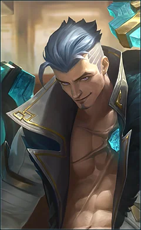

Born the son of Duke Vance, Fredrinn grew up into a gifted adventurer, but also the notorious 'money-grubber' in Los Pecados. The crystal in his chest had long merged with his heart. The terrifying scar would never fade, and Fredrinn never bothered to conceal it. All he had in mind was his search for his lost friend.